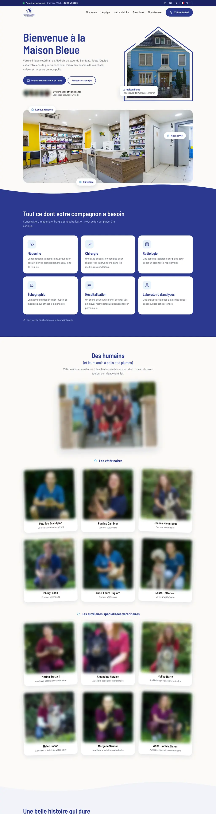
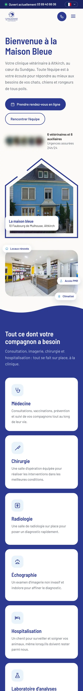
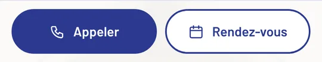
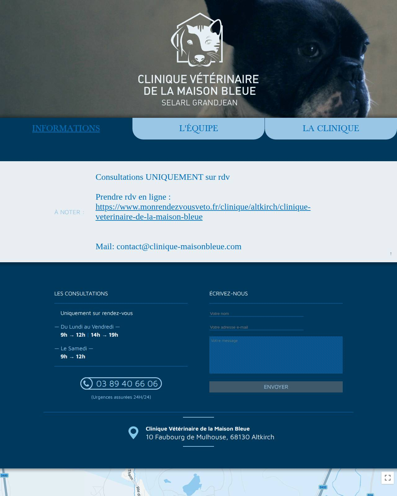

Accueil Réalisation
Clinique vétérinaire de la Maison Bleue
Un site correct mais daté, repensé pour que chaque visiteur trouve l'essentiel en quelques secondes : prendre rendez-vous, appeler, savoir si la clinique est ouverte.
- Activité
- Clinique vétérinaire, 6 vétérinaires et 6 auxiliaires
- Lieu
- Altkirch (Haut-Rhin), à 30 minutes de Bâle
- Formule
- Refonte complète
- Langues
- Français, anglais, allemand de Suisse



Avant, après
Glissez le curseur pour comparer l'ancien site et le nouveau, sur ordinateur ou sur téléphone.
Captures publiées avec l'accord de la clinique. Photos de l'équipe floutées.


Ce qui a changé, et pourquoi
Chaque changement répond à une question que se pose un visiteur. Le constat « avant » est celui de l'ancien site, tel qu'il est encore en ligne aujourd'hui.
| Sujet | Avant | Maintenant |
|---|---|---|
| Prendre rendez-vous | L'adresse du service de réservation, écrite en toutes lettres au milieu d'un texte. | Un bouton « Prendre rendez-vous en ligne » en haut de page, et un bouton « Rendez-vous » toujours visible en bas de l'écran sur téléphone. |
| Appeler la clinique | Le numéro affiché comme un simple texte : impossible de le toucher pour appeler depuis un téléphone. | Le numéro se touche pour appeler, partout sur la page ; un bouton « Appeler » reste en bas de l'écran sur téléphone. |
| Ouvert ou fermé ? | Les horaires, à lire et à comparer soi-même avec l'heure. | Un bandeau indique « Ouvert actuellement » ou « Fermé » selon l'heure de Paris, avec le numéro des urgences 24 h/24. |
| Identité | Un diaporama de photos en en-tête et des ornements décoratifs. | Une palette tirée du logo, et la vraie façade bleue de la clinique présentée dans la forme de maison du logo. |
| Les soins | Les six soins sur une seule ligne : « Médecine — Chirurgie — Radiologie… ». | Six cartes, chacune avec une phrase d'explication et la photo de la salle où le soin a lieu. |
| L'équipe et l'histoire | Sur la page d'accueil, l'équipe et l'histoire de la clinique tenaient dans de longs paragraphes. | Les 12 membres de l'équipe en photos, l'histoire en 5 dates de 1986 à 2020, et une visite des locaux en 7 photos. |
| Langues | Français uniquement, sans langue déclarée dans le code de la page. | Français, anglais et allemand de Suisse, chacun avec sa propre adresse, pour les propriétaires d'animaux venus de l'autre côté de la frontière. |
| Nous écrire | Un formulaire sans étiquettes (seules des consignes grisées dans les champs) et une adresse e-mail à recopier. | Un formulaire avec étiquettes visibles, téléphone obligatoire et protection contre les robots ; e-mail et réseaux sociaux en un clic. |
| Questions fréquentes | Aucune rubrique de questions : il fallait écrire ou appeler. | Les réponses aux questions courantes (rendez-vous, urgences, animaux soignés, accès), avec les horaires à côté. |
| Être trouvé sur Google | Un titre et une description, mais aucune donnée structurée pour décrire la clinique aux moteurs de recherche. | Titre et description dans chaque langue, données structurées (clinique, horaires, questions fréquentes), plan du site. Nous soignons ce qui dépend du site, sans promettre de classement. |
| Vitesse et vie privée | La carte Google et ses scripts se chargeaient dès l'ouverture de la page, avant toute action du visiteur. | Carte chargée seulement si on la demande, polices hébergées sur le site, images 34 % plus légères. Aucun cookie. |
| Lisible par tous | Des champs sans étiquette, difficiles à comprendre pour un lecteur d'écran. | Navigation complète au clavier, accès direct au contenu, contrastes soignés, animations coupées pour qui le demande. |
| Informations légales | Une page de mentions légales. | Mentions légales mises à jour, politique de confidentialité et conditions générales de fonctionnement de la clinique. |
Ce que nous avons gardé
Une refonte n'efface pas tout.
- Le logo et la maison bleue. Ils restent au centre : la palette du site en découle directement.
- Les textes de la clinique. Le ton chaleureux et l'histoire, depuis l'ouverture du cabinet en 1986, sont repris et raccourcis.
- La réservation en ligne existante. Le service déjà utilisé par la clinique est conservé ; seul l'accès change.
- Le nom de domaine et l'hébergement. Ils restent au nom de la clinique, chez son hébergeur.
Et votre site, il ressemblerait à quoi ?
Envoyez-nous son adresse : nous vous répondons par écrit sous 24 heures ouvrées.
Demander un devis